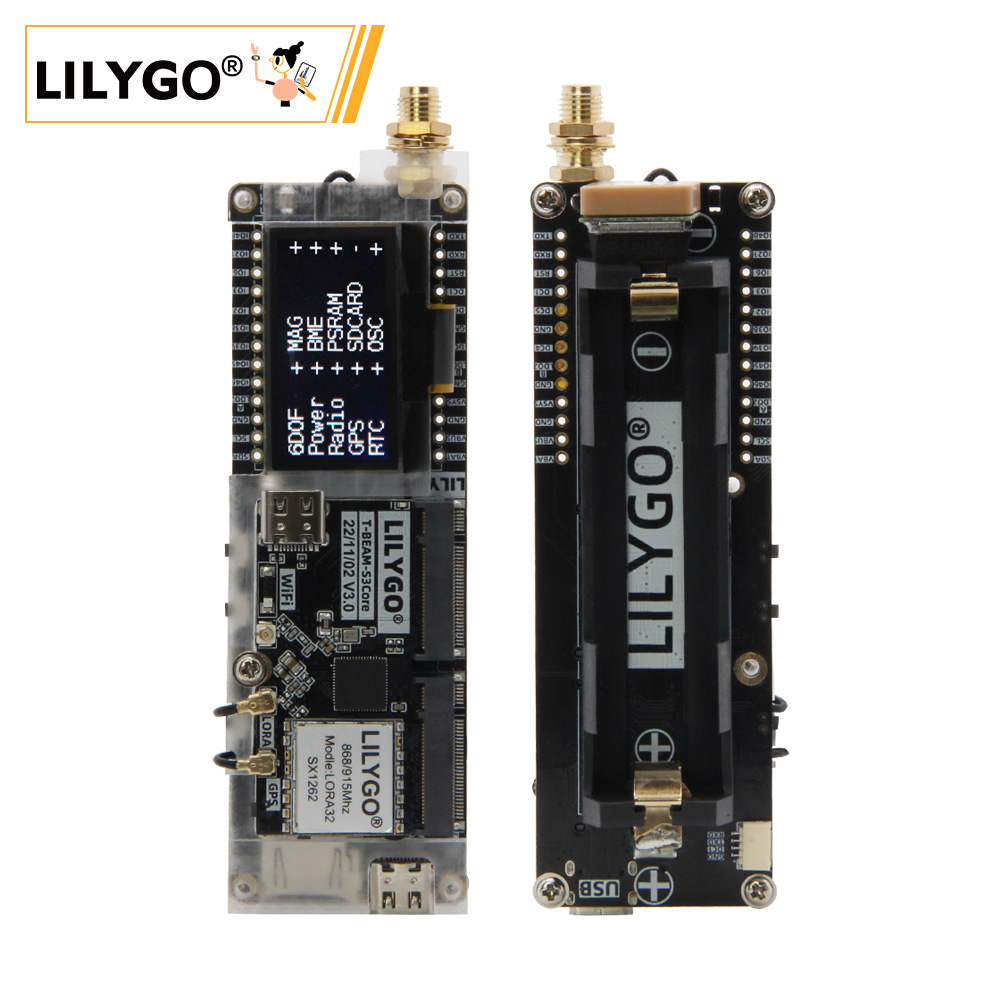
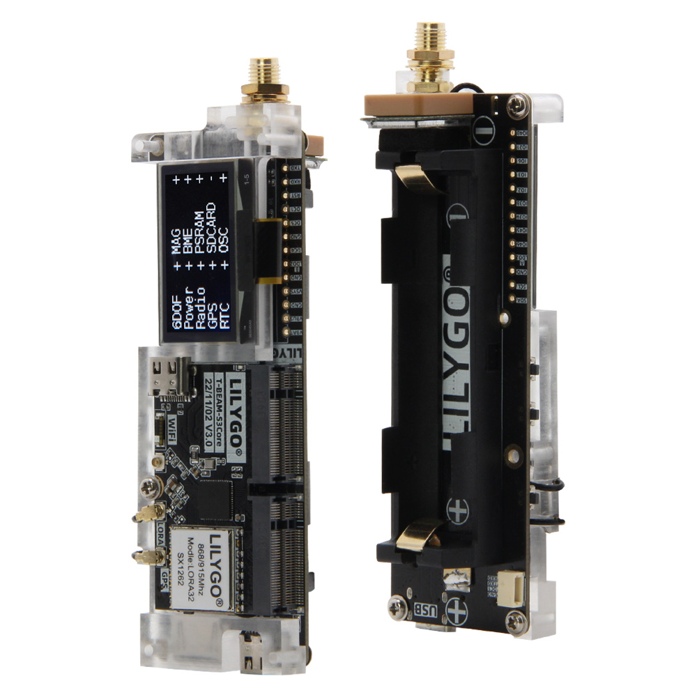
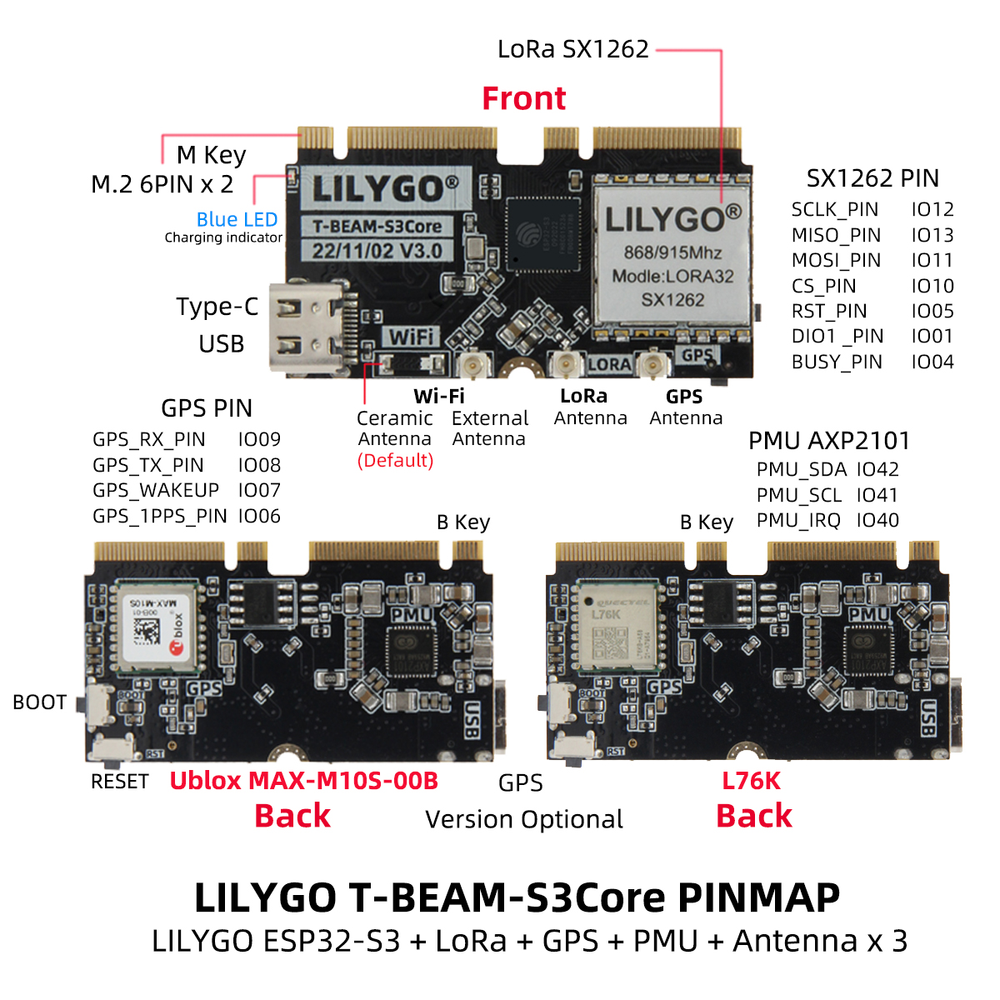
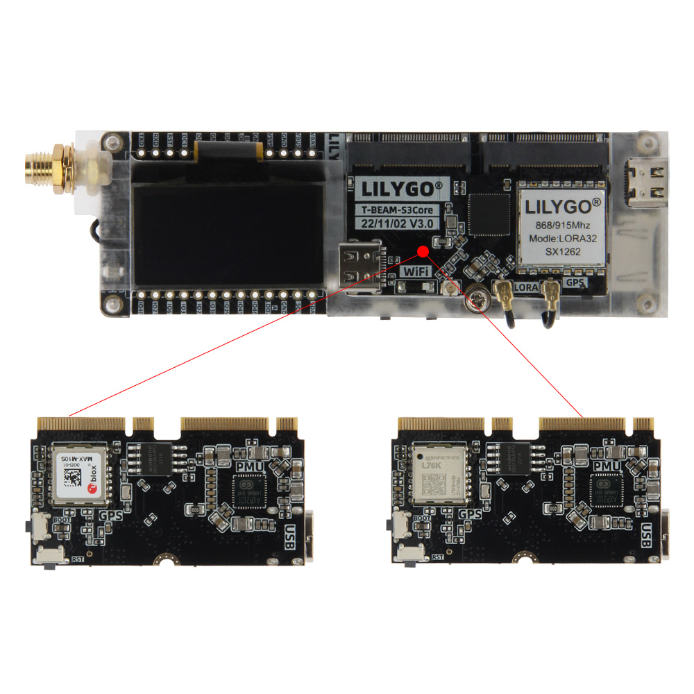
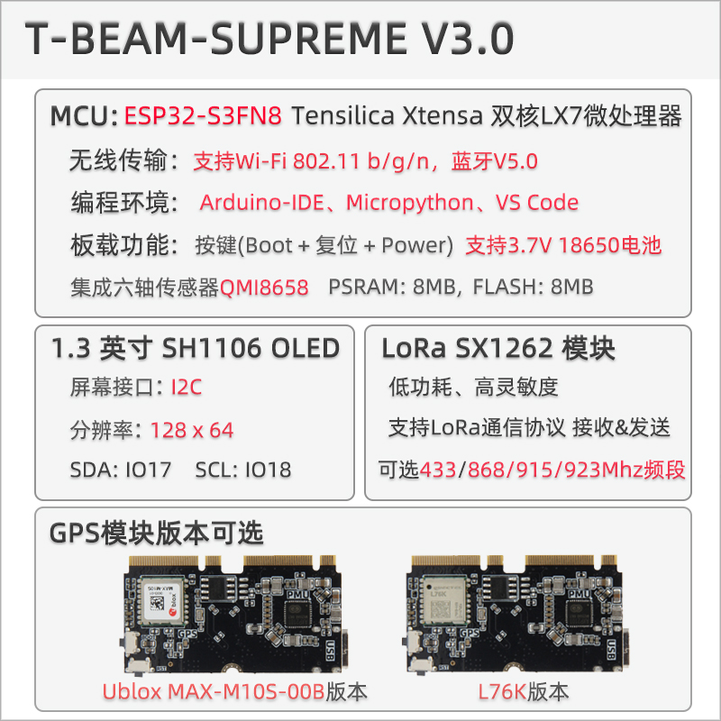

中文 简体
中文 简体LILYGO T-Beam SUPREME

版本迭代:
| Version | Update date | Update description |
|---|---|---|
| T-Beam-SUPREME_V3.0 | 最新版本 | 高性能多功能物联网开发板 |
购买链接
| Product | SOC | FLASH | PSRAM | LoRa | GPS | Link |
|---|---|---|---|---|---|---|
| T-Beam SUPREME | ESP32-S3FN8 | 8M | 8M | SX1262 | MAX-M10S/L76K | LILYGO Mall |
目录
描述
T-BEAM-SUPREME V3.0 是一款高性能多功能的物联网开发板，基于 ESP32-S3FN8 双核处理器设计，支持 Wi-Fi 802.11 b/g/n 和蓝牙 5.0，提供灵活的无线连接能力。开发板兼容 Arduino-IDE、MicroPython 和 VS Code 编程环境，搭载 8MB PSRAM 和 8MB Flash 存储，并集成六轴传感器（QMI8658）、温湿度气压传感器（BME280）、3.7V 18650 电池供电接口及多功能按键（Boot/复位/电源）。
其配备 1.3 英寸 SH1106 OLED 屏幕（128x64 分辨率，I2C 接口），支持 LoRa SX1262 模块（覆盖 433/868/915/923MHz 频段），可实现远距离低功耗通信。此外，用户可灵活选择 Ublox MAX-M10S 或 L76K GPS 模块版本，满足精准定位需求，适用于智能硬件、环境监测及物联网节点开发等场景。
预览
实物图

引脚图

核心板与拓展板


模块
MCU
- 芯片：ESP32-S3FN8
- PSRAM：8MB
- FLASH：8MB
- 其他说明：更多资料请访问乐鑫官方ESP32-S3数据手册
屏幕
- 尺寸：1.3英寸 OLED
- 分辨率：128x64px
- 屏幕类型：OLED
- 驱动芯片：SH1106
- 总线通信协议：I2C
LoRa
- 芯片：SX1262
- 频率：433/868/915/923MHz
- 其他：可选 SX1280 (2.4GHz)
GPS
- 芯片：MAX-M10S 或 L76K（可选）
- 特性：MAX-M10S 支持 NMEA 0183 协议，L76K 支持 UBX 协议
- 波特率：9600/19200/38400/57600/115200
传感器
- 六轴传感器：QMI8658
- 温湿度气压传感器：BME280
- 磁力计：QMC6310
电源管理
- 芯片：AXP2101
- 特性：支持 3.7V 18650 电池供电
RTC
- 芯片：PCF85063ATL
- 总线通信协议：I2C
I2C 设备地址
| Devices | 7-Bit Address | Share Bus |
|---|---|---|
| OLED Display (SH1106) | 0x3C | ✅️ |
| RTC (PCF8563) | 0x51 | ✅️ |
| MAG Sensor(QMC6310) | 0x1C | ✅️ |
| Temperature/humidity Sensor(BME280) | 0x77 | ✅️ |
| Power Manager (AXP2101) | 0x34 | ❌ |
电气参数
| Features | Details |
|---|---|
| 🔗USB-C Input Voltage | 3.9V-6V |
| ⚡Charge Current | 0-1024mA ((Programmable)) |
| 🔋Battery Voltage | 3.7V |
电源管理
| Channel | Peripherals |
|---|---|
| DC1 | ESP32-S3 |
| DC2 | Unused |
| DC3 | External M.2 Socket |
| DC4 | External M.2 Socket |
| DC5 | External M.2 Socket |
| LDO1(VRTC) | Unused |
| ALDO1 | BME280 Sensor & Display & MAG Sensor |
| ALDO2 | Sensor |
| ALDO3 | Radio |
| ALDO4 | GPS |
| BLDO1 | SD Card |
| BLDO2 | External pin header |
| DLDO1 | Unused |
| CPUSLDO | Unused |
| VBACKUP | Unused |
- T-Beam Supreme GPS 备用电源由 18650 电池提供。若您移除 18650 电池，将无法实现 GPS 热启动。如需使用 GPS 热启动，请连接 18650 电池。
概述

| 组件 | 描述 |
|---|---|
| MCU | ESP32-S3FN8 Dual-core LX7 microprocessor |
| FLASH | 8MB |
| PSRAM | 8MB |
| 屏幕 | 1.3 英寸 SH1106 OLED |
| LoRa | SX1262 (868/915MHz) / SX1280 (2.4GHz) |
| GPS | MAX-M10S 或 L76K |
| RTC | PCF85063ATL (I2C) |
| 传感器 | QMI8658 (六轴) + BME280 (温湿度气压) |
| 电源管理 | AXP2101 |
| 麦克风 | MP34DT05-A (PDM) |
| 存储 | TF 卡 |
| 无线 | 2.4GHz Wi-Fi + Bluetooth 5.0 |
| USB | 1 × USB Port and OTG (TYPE-C接口) |
| IO 接口 | 2.54mm间距 2*13 拓展IO接口 |
| 拓展接口 | WiFi天线 + LoRa天线 + GPS天线 + Qwiic接口 |
| 按键 | 1 x RESET + 1 x BOOT + 1 x Power |
| 电池 | 支持 3.7V 18650 电池 |
| 尺寸 | 114x33x28mm |
快速开始
示例支持
./examples/
├── ArduinoLoRa # Only support SX1276/SX1278 radio module (仅支持 SX1276/SX1278 无线电模块)
│ ├── LoRaReceiver
│ └── LoRaSender
├── Display # Only supports TBeam TFT Shield
│ ├── Free_Font_Demo
│ ├── TBeam_TFT_Shield
│ ├── TFT_Char_times
│ └── UTFT_demo
├── GPS # T-Beam GPS demo examples
│ ├── TinyGPS_Example
│ ├── TinyGPS_FullExample
│ ├── TinyGPS_KitchenSink
│ ├── UBlox_BasicNMEARead # Only support Ublox GNSS Module
│ ├── UBlox_NMEAParsing # Only support Ublox GNSS Module
│ ├── UBlox_OutputRate # Only support Ublox GNSS Module
│ └── UBlox_Recovery # Only support Ublox GNSS Module
├── LoRaWAN # LoRaWAN examples
│ ├── LMIC_Library_OTTA
│ └── RadioLib_OTAA
├── OLED
│ ├── SH1106FontUsage
│ ├── SH1106GraphicsTest
│ ├── SH1106IconMenu
│ ├── SH1106PrintUTF8
│ ├── SSD1306SimpleDemo
│ └── SSD1306UiDemo
├── PMU # T-Beam & T-Beam S3 PMU demo examples
├── RadioLibExamples # RadioLib examples,Support SX1276/78/62/80...
│ ├── Receive_Interrupt
│ └── Transmit_Interrupt
├── Sensor # Sensor examples,only support t-beams3-supreme
│ ├── BME280_AdvancedsettingsExample
│ ├── BME280_TestExample
│ ├── BME280_UnifiedExample
│ ├── PCF8563_AlarmByUnits
│ ├── PCF8563_SimpleTime
│ ├── PCF8563_TimeLib
│ ├── PCF8563_TimeSynchronization
│ ├── QMC6310_CalibrateExample
│ ├── QMC6310_CompassExample
│ ├── QMC6310_GetDataExample
│ ├── QMC6310_GetPolarExample
│ ├── QMI8658_BlockExample
│ ├── QMI8658_GetDataExample
│ ├── QMI8658_InterruptBlockExample
│ ├── QMI8658_InterruptExample
│ ├── QMI8658_LockingMechanismExample
│ ├── QMI8658_MadgwickAHRS
│ ├── QMI8658_PedometerExample
│ ├── QMI8658_ReadFromFifoExample
│ └── QMI8658_WakeOnMotion
|── T3S3Factory # T3 S3 factory test examples
└── Factory # T-Beam & T-Beam S3 and BPF factory test examples
PlatformIO
- 安装 Visual Studio Code 和 Python
- 在
Visual Studio Code的扩展中搜索PlatformIO插件并安装 - 安装完成后，需要重启
Visual Studio Code - 重启后，在左上角选择
文件->打开文件夹-> 选择LilyGo-LoRa-Series目录 - 等待第三方依赖库安装完成
- 点击打开
platformio.ini文件，在platformio栏目中 - 在
default_envs下选择您要使用的开发板名称，并取消其注释 - 取消其中一行
src_dir = xxxx的注释，确保只有一行生效。请注意示例注释，其中说明了哪些功能可用、哪些不可用。 - 点击左下角的 (✔) 符号进行编译
- 使用 USB-C 数据线将开发板连接至电脑（Micro-USB 接口用于模块固件升级）
- 点击 (→) 上传固件
- 点击 (插头符号) 监视串行输出
- 若无法烧录或 USB 设备持续闪烁，请查看下方的常见问题解答
Arduino
安装 Arduino IDE
将
lib目录中的所有文件夹复制到Sketchbook location目录中。如何查找库文件位置，请参阅此处- Windows:
C:\Users\{用户名}\Documents\Arduino - macOS:
/Users/{用户名}/Documents/Arduino - Linux:
/home/{用户名}/Arduino
- Windows:
打开相应示例
- 打开已下载的
LilyGo-LoRa-Series文件夹 - 打开
examples文件夹 - 选择示例文件并打开后缀为
ino的文件
- 打开已下载的
在 Arduino IDE 工具菜单中选择对应开发板型号，点击下方列表中的对应选项进行选择
| Name | Value |
| ------------------------------------ | --------------------------------- |
| Board | ESP32S3 Dev Module |
| Port | Your port |
| USB CDC On Boot | Enable |
| CPU Frequency | 240MHZ(WiFi) |
| Core Debug Level | None |
| USB DFU On Boot | Disable |
| Erase All Flash Before Sketch Upload | Disable |
| Events Run On | Core1 |
| Flash Mode | QIO 80MHZ |
| Flash Size | 8MB(64Mb) |
| Arduino Runs On | Core1 |
| USB Firmware MSC On Boot | Disable |
| Partition Scheme | 8M Flash(3M APP/1.5MB SPIFFS) |
| PSRAM | QSPI PSRAM |
| Upload Mode | UART0/Hardware CDC |
| Upload Speed | 921600 |
| USB Mode | CDC and JTAG |
| Programmer | Esptool |请根据您的开发板型号取消
utilities.h文件中对应型号的注释，例如T_BEAM_S3_SUPREME_SX1262或者T_BEAM_S3_SUPREME_LR1121，否则编译将报错上传程序
开发平台
引脚总览
| Name | GPIO NUM | Free |
|---|---|---|
| Uart1 TX | 43(External QWIIC Socket) | ✅️ |
| Uart1 RX | 44(External QWIIC Socket) | ✅️ |
| SDA | 17 | ❌ |
| SCL | 18 | ❌ |
| OLED(SH1106) SDA | Share with I2C bus | ❌ |
| OLED(SH1106) SCL | Share with I2C bus | ❌ |
| RTC(PCF8563) SDA | Share with I2C bus | ❌ |
| RTC(PCF8563) SCL | Share with I2C bus | ❌ |
| MAG Sensor(QMC6310) SDA | Share with I2C bus | ❌ |
| MAG Sensor(QMC6310) SCL | Share with I2C bus | ❌ |
| RTC(PCF8563) Interrupt | 14 | ❌ |
| IMU Sensor(QMI8658) Interrupt | 33 | ❌ |
| IMU Sensor(QMI8658) MISO | Share with SPI bus | ❌ |
| IMU Sensor(QMI8658) MOSI | Share with SPI bus | ❌ |
| IMU Sensor(QMI8658) SCK | Share with SPI bus | ❌ |
| IMU Sensor(QMI8658) CS | 34 | ❌ |
| SPI MOSI | 35 | ❌ |
| SPI MISO | 37 | ❌ |
| SPI SCK | 36 | ❌ |
| SD CS | 47 | ❌ |
| SD MOSI | Share with SPI bus | ❌ |
| SD MISO | Share with SPI bus | ❌ |
| SD SCK | Share with SPI bus | ❌ |
| GNSS(L76K or Ublox M10) TX | 8 | ❌ |
| GNSS(L76K or Ublox M10) RX | 9 | ❌ |
| GNSS(L76K or Ublox M10) PPS | 6 | ❌ |
| GNSS(L76K) Wake-up | 7 | ❌ |
| LoRa(SX1262 or LR1121) SCK | 12 | ❌ |
| LoRa(SX1262 or LR1121) MISO | 13 | ❌ |
| LoRa(SX1262 or LR1121) MOSI | 11 | ❌ |
| LoRa(SX1262 or LR1121) RESET | 5 | ❌ |
| LoRa(SX1262 or LR1121) DIO1/DIO9 | 1 | ❌ |
| LoRa(SX1262 or LR1121) BUSY | 4 | ❌ |
| LoRa(SX1262 or LR1121) CS | 10 | ❌ |
| Button1 (BOOT) | 0 | ❌ |
| PMU (AXP2101) IRQ | 40 | ❌ |
| PMU (AXP2101) SDA | 42 | ❌ |
| PMU (AXP2101) SCL | 41 | ❌ |
GNSS 唤醒功能仅在 L76K 版本中可用。
收音机有自己的 SPI 总线，而其他外设 SPI 设备则共享该 SPI 总线
相关测试
测试数据待补充
常见问题
Q. 如何选择 GPS 模块版本？
A. MAX-M10S 精度更高功耗更低，L76K 成本更有优势。根据定位精度和预算需求选择。Q. LoRa 通信距离不理想怎么办？
A. 检查天线连接，确保在开阔环境使用，调整 LoRa 参数（扩频因子、带宽等）。Q. 电池供电时间短？
A. 启用深度睡眠模式，关闭不必要的传感器和外设，选择低功耗运行模式。Q. 设备无法烧录程序？
A. 确保 USB CDC On Boot 已启用，按住 BOOT 按键再点击 RESET 进入下载模式。